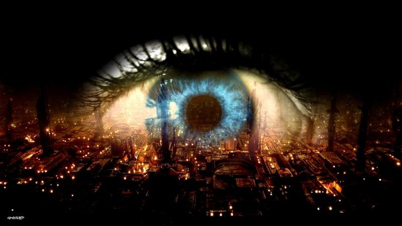

Religion & Symbolism
The City, Eyes and Christ
When Blade Runner came out in 1982, it dazzled audiences with its representation of humanity's fallen social and technological structure. Utilizing unparalleled set design, the film presented a dark visual predicament of our future through the use of monstrous industrial environments, out-of-control scientific advancements, and urban decay.
Blade Runner ultimately asks the question about what makes one human. Roy Batty (Rutger Hauer) leads a team of replicant (android) rebels who arrive in Los Angeles from the Off-World colonies in an attempt to confront the head of the Tyrell corporation which manufactures them. Limited to a four year life span, the team wants to find a way to extend their purposely limited life-spans. Since replicants once mutinied in a space colony, they are not permitted on earth under penalty of death. Hunted by Rick Deckard (Harrison Ford) who belongs to a special police unit of robot killers known as Blade Runners, Roy Batty manages to answer the film's critical question only moments before his own death.
Although the name Blade Runner is taken from an idea by author William Boroughs, the film is loosely adapted from Philip K. Dick's 1969 science fiction story Do Androids Dream of Electric Sheep? Ridely Scott, a director with a solid background of 3000 television commercials and the successful films The Duelists (1978) and Alien (1979) reportedly committed to making the film without reading the book. Collaborating with industrial designer Lawrence Paul, art director David Snyder, and cartoon artist Syd Mead, Scott's usage of repeating visual patterns, ocular icons, and recurring forms make it possible to explore the film using the formalist theory approach. The focus of this paper will be the examination of the three major image based motifs of the film: the city, the eye, and the representation of Christ in an effort to uncover their visual significance and meaning.
The opening scene of Blade Runner is terrifying. Fire explodes upward from an endless sea of lights into an eternal nighttime sky. Massive smokestacks belch pollution and neon lights burn coldly in the darkness. This revelation of Los Angeles in the year 2019 appears more like Hell than earth. The film's universe as a post-apocalyptic vision on excessive capitalism and technology run amok manifests itself in the images of buildings resembling cancerous growths and the different angles in which the cinematography presents this vision (Kerman 54).
For example, the Tyrell corporation inhabits two 700 story towers built in the resemblance of Mayan Temple pyramids. The towers represent the basic premise to the entire concept of building in this universe. Instead of tearing down buildings or dismantling established technology, modifications and additions are built and added to existing structures.
The depiction of these images is conducted through the use of aerial special effects shots and ground level scenery. From the air, the buildings are a fascinating array of rectangular, tube, triangular, and cone shaped dimensions. Devoid of ambient sound, the city is a collage of different geometrical shapes offset and distorted by harsh lights and the blackness of the sky.
The street level poses a less glamorous approach. The futuristic urban center of LA is crowded, dirty, and congested. Asians, punks, and midgets walk the streets as cars manoeuvre through traffic lights that flash colors and speak commands. There is limited visual perception of the horizontal plane due to the masses of inhabitants and there is also limited visibility on the vertical plane because of the skyscrapers and slow moving blimps that advertise Off World explorations and consumption of mood pills. After the opening shot of hell-on-earth, the next shot in Blade Runner is a full frame close up of a blue eye. The eye reflects the image of the city against its cornea and establishes the importance of eyesight throughout the entire film. It is apparent that this eye belongs to Roy Batty, demonstrating his ability as an artificial construct to see. In support of this reality, Batty and another replicant named Leon enter the laboratory of Hannibal Chew, a genetic scientist who specialises in the creation of eyes. Interrogating the scientist, Leon rolls an artificial eye on his shoulder as Batty supports his ability of optical perception by saying to Chew, "If only you could see what I've seen with your eyes!"
Although Blade Runner allows both humans and robots the capability of eyesight, determining who is human and thus bearing a soul is validated by optically inspecting the eyes. The Voigt-Kampf test is the electronic magnifying device which measures a subject's involuntary pupil responses to a series of questions meant to illicit empathic feelings. This process is completed on the visual level, as the tester watches an enlargement of a subject's pupil on a television screen and calculates the timing of contractions and dilation. Since replicants have no empathy, their pupils do not respond involuntarily and this is the only visual aspect of their appearance that is unlike humans. The film proposes that empathic feelings are obtained through the influence of optic memories and dreams. In Deckard, this is presented by his vision of the unicorn and in replicants it appears as their collection of photographs. For example, the replicant Rachel saves a fake photograph which she believes is of her mother and her. Leon takes amateur photographs of his hotel room and former life on the Off-world colonies. A different example is Roy Batty, who's will to live is based upon his desire to perceive the world around him. His need to see is so strong, he breaks through walls with his hands and head, smashes windows, and defies his own death. When he finally succumbs to the shut down of his systems he mourns the loss of his own memories and eyesight, rather than his physical extinction (Deutelbaum 76).
In dealing with the imagery and stylistic attributes of eyes and eyesight that are organic and artificial, the film also explores the capabilities of the electronic eye. Deckard uses two electronic eyes as he hunts for the replicants: the Esper machine and the electron microscope. Studying a photograph that Leon took of his hotel room, Deckard decides that there is more in it than his eye can perceive. Using an Esper machine which scans the photo and zooms in and out of it by voice control, he explores areas of the photograph that are concealed to the naked eye. As an electronic eye, the machine breaks the barriers of normal visual perception by zooming into the picture and revealing a totally unperceived reality. The machine is so powerful that it magnifies the image of a mirror evident in the photograph and uncovers a reflection of a replicant in it.
Using an electron microscope, Deckard investigates the origins of a small piece of tissue he believes to be of a fish. The magnified electronic image of the tissue reveals that its individual fibers are actually made up of thick cone shaped strands and a rough boulder like surface. In effect, the process of "layering" that influenced the visual aspects of the film's city is apparent also in our ability to perceive different images of the same object as layers of its reality.
The final scene in Blade Runner gains a religious significance not from the narrative structure but from the visual design. When Roy Batty discovers that Deckard shot another replicant in their hideaway apartment, he gives him a head start to run away. While Deckard escapes, Batty anoints his head with the dead replicants blood. He also disrobes, but before resuming the chase he loses feeling in his hand which is a sign of his approaching death. Desperate for time, he finds a metal spike and stabs himself in order to regain feeling and prolong his life for a few moments longer. His impaled hand and the blood on his head is a foreshadowing of the religious significance this final scene will have.
Batty finally corners Deckard on the roof. The Blade Runner runs away from the replicant by jumping to another rooftop. Unfortunately he falls short and manages to grasp on to metal railings before falling. Batty easily jumps to the other side of the roof and appears above him. Using quick editing, the image jumps from Batty's face of hatred and contempt to Deckard's terrorized face. Just when he loses his grip and begins to fall Batty grabs him with the spike impaled hand and lifts him onto the rooftop. Sitting before the puzzled Blade Runner, Batty says his last words:
I've seen things you people wouldn't believe. Attack ships on fire off the shoulder of Orion. I watched c-beams glitter in the dark near the Tanhauser Gate. All those moments will be lost in time - like tears in the rain. Time to die.
Batty's last words are not rendered in a visual manner nor are the definitions he talks of answered. Instead, the film allows the audience to create the memories the replicant speaks about through their own imagination using the film's images as a supporting factor. As Roy Batty bows his head and dies, he releases the dove he held into the sky, releasing his spirit. As the frame captures his bowed head from above in the rain, he completes the series of images that present him as Christ.
Blade Runner's three major visual motifs: the city, the eye, and Christ both enhance the narrative structure of the film and create an interpretation entirely of their own. The city's abundant light sources and obese structural appearance almost causes an overload of retinal stimulation to the viewer or at least creates the inability to process the entire image at twenty four frames per second. The city's multilayered portrait reflects the different ability that humans, replicants, and electronic eyes have in perceiving the same universe. The head of the Tyrell corporation sees the city from above, the replicants perceive images on the street level, and the Esper machine uncovers hidden reality in a photograph. The eye motif serves as a visual metaphor for deciding who is human. By claiming that the only visual distinguishing trait between replicants and humans is the difference in their eyes, the film refers to the image of the eye as the image of the soul. Finally, Roy Batty's visual relevance to Christ does not mean that he sacrificed his life unselfishly for Deckard and embodies the Tyrell corporation's slogan of being "more human than human.". Batty saves the man who hunted him down and killed all his comrades because he wants Deckard to witness his death. In an attempt to immortalize himself, the replicant understands that this can only be done by becoming a memory in another person.
Bibliography #
- Dempsey, Michael. "Blade Runner," Film Quarterly, Winter 82-83 p.33-38
- Deutelbaum, Marshall. "Memory/Visual Design: The Remembered Sights of Blade Runner," Literature/Film Quarterly, Jan 89 p. 66-72
- Dick, Philip K. Do Androids Dream of Electric Sheep? New York: Doubleday & Company, Inc. 1968
- Doll, Susan and Faller, Greg. "Blade Runner and Genre: Film Noir and Science Fiction," Literature/Film Quarterly, April 86 p. 88-100
- Elitzik, Paul. "Blade Runner," Cineaste, 1983 p. 46-48
- Kerman, Judith B. Retrofitting Blade Runner: Issues in Ridley Scott's Blade Runner and Philip K. Dick's Do Androids Dream of Electric Sheep? Bowling Green, Ohio: Bowling Green State University Popular Press 1991
- Morrison, Rachela. "The Blakean Dialectics of Blade Runner," Literature/Film Quarterly, Jan. 90 p.2-10
- Ruppert, Peter. "Blade Runner: The Utopian Dialectics of Science Fiction Films," Cineaste, 1989 p. 8-13
- Sammon, Paul M. Future Noir: The Making of Blade Runner. New York: HarperPrism 1996
- Slade, Joseph. "Romanticizing Cybernetics in Ridley Scott's Blade Runner," Literature/Film Quarterly, Jan 90 p.11-18
- Wilmington, Mike. "The Rain People," Film Comment, Jan-Feb 92 p.17-19
Written by Amotz Zakai